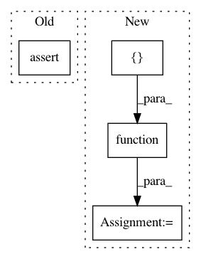

a8dc2e3b4bc4f70c4fce74d371600b05745d8b06,theano/tensor/nnet/tests/test_neighbours.py,T_Images2Neibs,test_neibs_half_step_by_valid,#T_Images2Neibs#,239
Before Change
x_using_valid = images2neibs(padded_x, neib_shape, neib_step, mode="valid")
x_using_half = images2neibs(x, neib_shape, neib_step, mode="half")
close = T.allclose(x_using_valid, x_using_half)
assert close.eval()
def test_neibs_bad_shape_wrap_centered(self):
shape = (2, 3, 10, 10)
After Change
x_using_valid = images2neibs(padded_x, neib_shape, neib_step, mode="valid")
x_using_half = images2neibs(x, neib_shape, neib_step, mode="half")
close = T.allclose(x_using_valid, x_using_half)
f = theano.function([], close, mode=self.mode)
assert f()
def test_neibs_bad_shape_wrap_centered(self):
shape = (2, 3, 10, 10)
In pattern: SUPERPATTERN
Frequency: 3
Non-data size: 4
Instances
Project Name: Theano/Theano
Commit Name: a8dc2e3b4bc4f70c4fce74d371600b05745d8b06
Time: 2017-05-19
Author: botevmg@gmail.com
File Name: theano/tensor/nnet/tests/test_neighbours.py
Class Name: T_Images2Neibs
Method Name: test_neibs_half_step_by_valid
Project Name: Theano/Theano
Commit Name: c5c417c92ff87484ad4c1f6e41207c0b778a4bed
Time: 2017-06-20
Author: lamblinp@iro.umontreal.ca
File Name: theano/tensor/nnet/tests/test_neighbours.py
Class Name: T_Images2Neibs
Method Name: test_neibs_full_step_by_valid
Project Name: Theano/Theano
Commit Name: c5c417c92ff87484ad4c1f6e41207c0b778a4bed
Time: 2017-06-20
Author: lamblinp@iro.umontreal.ca
File Name: theano/tensor/nnet/tests/test_neighbours.py
Class Name: T_Images2Neibs
Method Name: test_neibs_half_step_by_valid